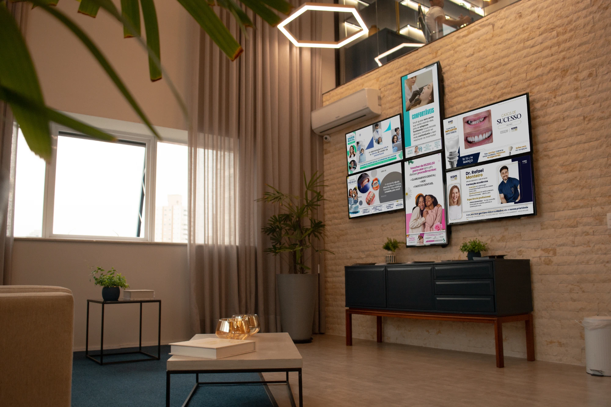
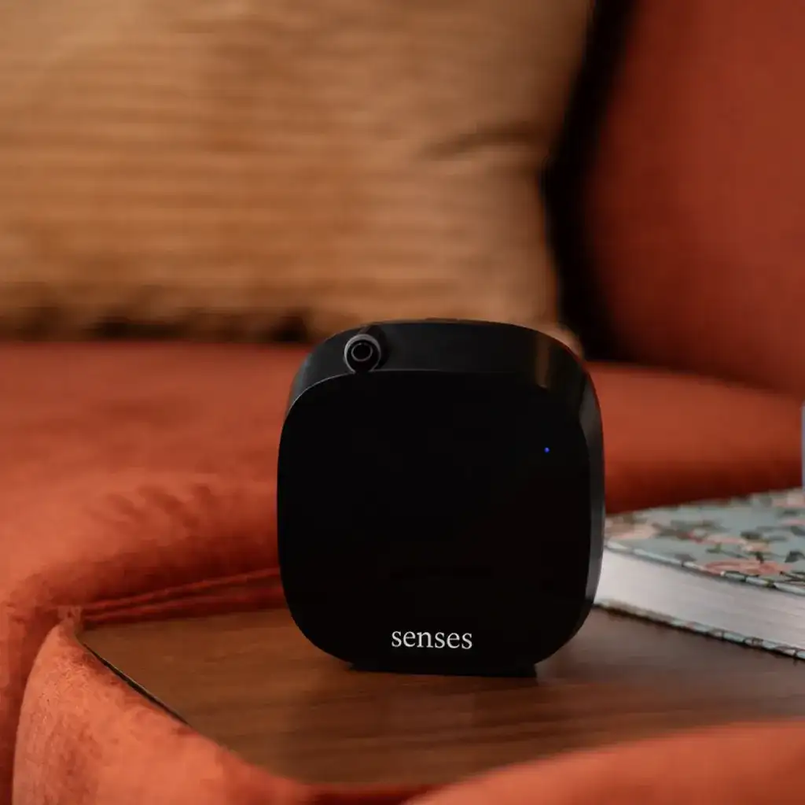

Visão
Sua marca, seus procedimentos e conteúdo de saúde curado na TV da recepção.
A IcomTV cuida do que o seu paciente vê e ouve na sala de espera. A Senses cuida do que ele sente no primeiro respiro. Juntas, transformam a recepção da sua clínica em uma experiência completa — e você tem condições especiais em 3 modelos de aromatizadores.


Há anos a IcomTV transforma o tempo de espera em conexão: conteúdo de saúde, a sua marca na tela, autoridade antes da consulta. Mas uma recepção não é só tela. Ela tem temperatura, som, luz — e cheiro. E o cheiro é o primeiro sinal que o paciente recebe, antes de qualquer imagem.
Sua marca, seus procedimentos e conteúdo de saúde curado na TV da recepção.
Programação que acolhe e educa, substituindo o silêncio constrangedor da espera.
A fragrância certa para a sua especialidade, que acalma, transmite higiene e vira memória da sua marca.
“Nossos clientes já investem para que o paciente veja o valor da clínica. Faltava fazer com que ele sentisse. Escolhemos a Senses porque ela não vende uma máquina: entrega diagnóstico, curadoria e acompanhamento — o mesmo cuidado que a gente coloca em cada TV instalada.”
— Manifesto da parceria IcomTV + SensesO olfato é o único sentido ligado diretamente ao sistema límbico — a região que processa emoção e memória. Por isso um aroma é sentido antes de ser pensado, e fica guardado por muito mais tempo do que uma imagem.
Marketing olfativo é usar isso de forma estratégica: escolher a fragrância certa para o seu ambiente, o seu público e a sua marca. Cheiro bom qualquer um entrega. O desafio é ter o cheiro certo.
Notas pensadas para acolher e acalmar diminuem a tensão de quem chega para uma consulta ou procedimento.
Na saúde, o cheiro do ambiente diz se o lugar é frio ou acolhedor, impessoal ou cuidadoso.
O paciente lembra de como se sentiu na sua clínica — e associa esse aroma a você.
Paciente relaxado presta mais atenção ao conteúdo e às campanhas que você exibe na IcomTV.
Com IcomTV e Senses juntas, a espera deixa de ser tempo perdido e vira a primeira etapa do atendimento — do primeiro respiro até a lembrança que o paciente leva para casa.
Antes de ver qualquer coisa, o paciente respira a sua clínica. A fragrância Senses dá o tom: aqui eu sou bem cuidado.
SensesO ambiente perfumado reduz a tensão. A TV chama a atenção com conteúdo de saúde relevante.
Senses + IcomTVRelaxado, assiste aos seus procedimentos, depoimentos e campanhas. Confiança construída antes da consulta.
IcomTVO aroma vira assinatura da sua marca. Sempre que sentir algo parecido, ele lembra da sua clínica.
Experiência completaTodos em comodato e assinatura, com instalação assistida, garantia eterna do equipamento e essências MoreSenses recorrentes. O consultor Senses confirma o modelo ideal após o diagnóstico do seu espaço.
Condição especial Valores exclusivos para clientes IcomTV são apresentados pelo consultor Senses após o diagnóstico gratuito.
O equipamento é da Senses e fica na sua clínica. Você paga uma assinatura mensal que inclui tudo — e nunca mais se preocupa com aromatização.
O aromatizador é cedido pela Senses. Nenhum investimento inicial em equipamento.
Parou, falhou ou desgastou? A Senses conserta ou troca, sem custo, durante toda a assinatura.
Refil MoreSenses de alta performance entregue periodicamente. Sua recepção nunca fica sem aroma.
Software exclusivo Senses acompanha o equipamento e antecipa manutenção e reposição.
Preencha o formulário como cliente IcomTV. Um consultor Senses fala com você pelo WhatsApp.
Analisamos o tamanho da recepção, o fluxo de pacientes e o posicionamento da sua clínica.
Indicamos o modelo e a fragrância MoreSenses ideais. A equipe técnica instala e valida.
Essências recorrentes, monitoramento e garantia eterna. Você só sente o resultado.
Preencha seus dados e um consultor Senses entra em contato pelo WhatsApp para agendar o diagnóstico gratuito e apresentar a condição especial para clientes IcomTV.
Em breve um consultor Senses vai falar com você. Se preferir, adiante a conversa agora:
Continuar no WhatsAppAinda ficou alguma pergunta? Fale com o consultor depois de preencher o formulário.
Clínicas e consultórios que são clientes ativos da IcomTV. Ao preencher o formulário, a Senses confirma o vínculo e apresenta os valores exclusivos.
É um empréstimo do equipamento. O aromatizador continua sendo da Senses e fica instalado na sua clínica enquanto durar a assinatura. Você não paga pelo aparelho.
Enquanto você for assinante, qualquer defeito ou desgaste do aromatizador é resolvido pela Senses — com conserto ou troca do equipamento, sem custo adicional.
Equipamento em comodato, diagnóstico do ambiente, curadoria da fragrância, instalação assistida, essências MoreSenses recorrentes, manutenção e monitoramento via software exclusivo Senses.
Depende do tamanho e do fluxo do ambiente. Como referência: Brisa para até 25 m², Serena para até 45 m² e Ventus para até 160 m². O consultor confirma após o diagnóstico.
A curadoria considera o perfil do seu público e a sua especialidade. A intensidade e os horários de difusão são programados para um aroma presente, mas nunca invasivo.
Não. O equipamento é monitorado e as essências são enviadas de forma recorrente. Você não precisa lembrar de nada.